Proof of Delivery - Delivery Signature, Photo, GPS by QR
Electronic proof of delivery and delivery confirmation by QR code: receiver, quantities, photos, signature and GPS geofence check on the delivery order.
- Price
- $129
- Odoo versions
- 17.0
- 18.0
- 19.0
- 20.0
- Technical name
tamadoo_epod- License
- OPL-1

Text and screenshots below are from the Odoo 20.0 version of this module.
Every confirmed delivery gets a QR code. The driver or the customer scans it with any phone (no app, no login) and records the receiver, the quantities received, photos, a signature and the GPS position. Submitting validates the delivery in Odoo.
Scan, capture, done
The capture page opens in the phone browser straight from the QR code. It works for your own drivers, third-party couriers and customers collecting goods themselves.
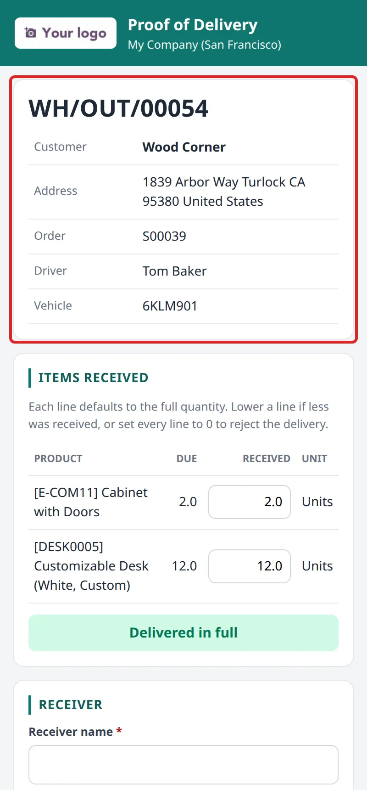
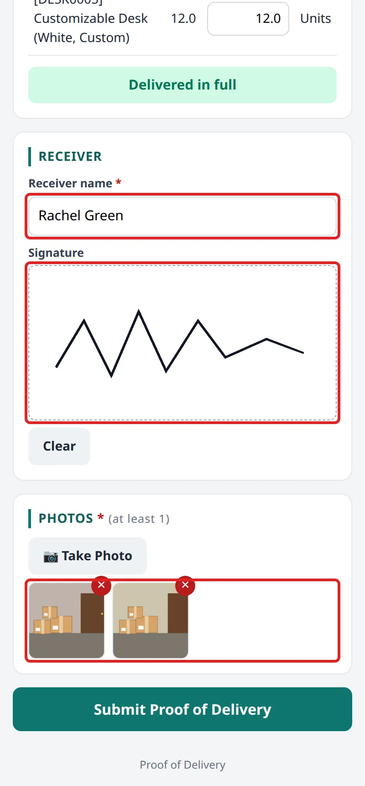
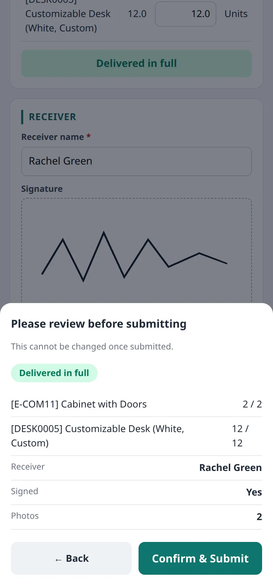
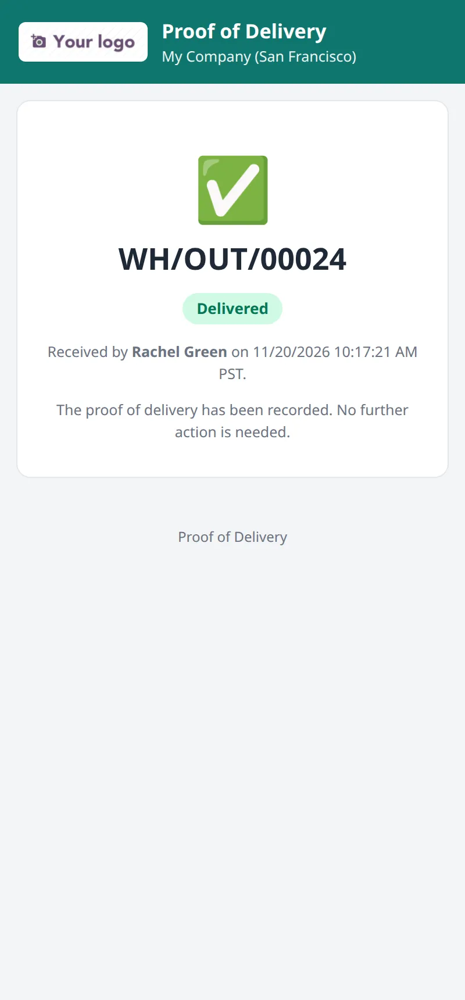
Built on the delivery order
No separate app or parallel document: the proof lives on the standard Inventory transfer, and the capture closes it at the quantities the customer accepted.
Photos & signature
Native phone camera, photos downscaled before upload. Optional signature pad. Minimum photo count per company.
GPS geofence
The capture position is compared with the customer's coordinates. Radius per company, overridable per contact.
Full, partial, rejected
Per-line received quantities. Short deliveries need a reason and create a backorder (with its own QR) or close the rest.
Secure link
A random token per delivery; the page opens only that delivery and can be submitted once. Managers can regenerate it.
Proof of Delivery PDF
Ordered vs received, receiver, signature, GPS check and photos, on your company layout. QR slip in A6 or on the Delivery Slip.
Analysis
Deliveries by status, customer, driver and geofence result in list, pivot and graph views.
Step by step
Confirmed delivery: QR code ready
The Proof of Delivery tab shows the capture link and QR code. Print the A6 QR slip, open the capture page or, as a manager, deliver without e-POD.
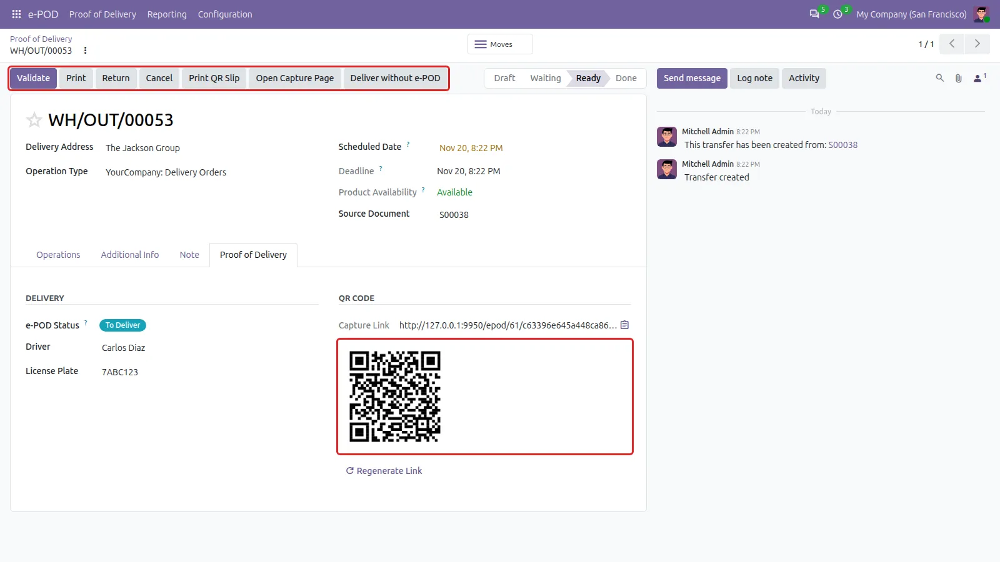
QR printed on the Delivery Slip
Optionally the QR code is added to the standard Delivery Slip, so the paperwork the driver already carries is all that is needed.
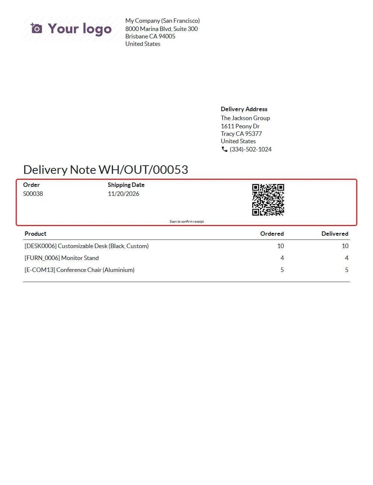
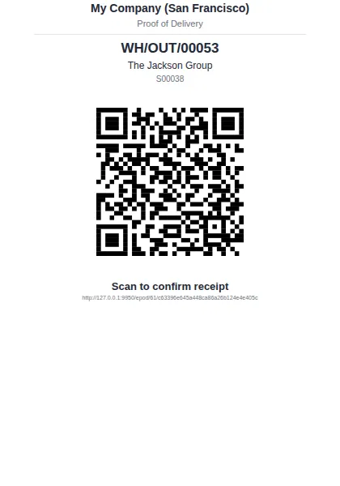
Partial or rejected delivery
Lower a line to record a shortage, or set every line to 0 to reject the delivery. A reason is then required.
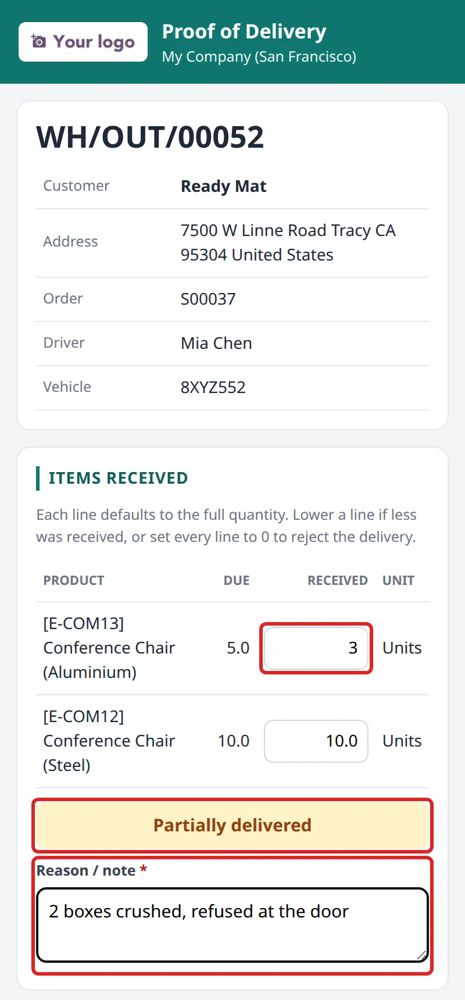
The proof on the delivery
Receiver, time, signature, GPS position, distance to the customer and the geofence result, with the photos and a chatter summary.
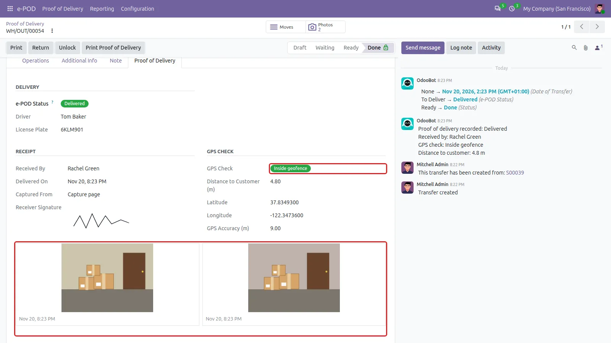
Proof of Delivery report
Send it to the customer or keep it with the invoice.
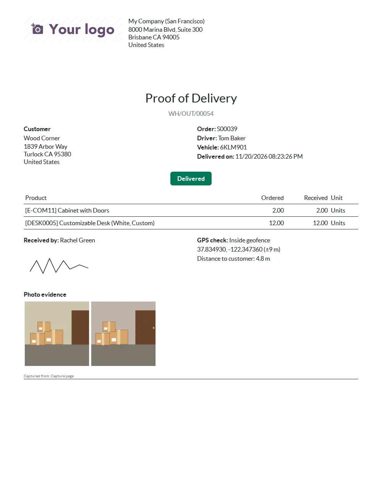
Follow every delivery
The e-POD app lists deliveries to deliver, delivered, partially delivered or rejected, with filters for outside-geofence and missing GPS.
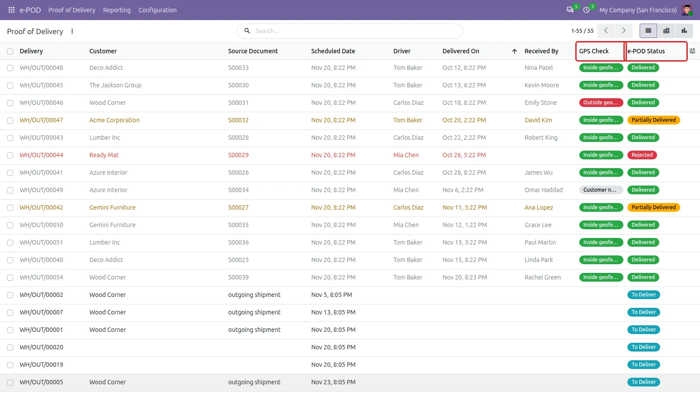
Delivery analysis
Weekly outcome per status; switch to pivot to compare customers or drivers.
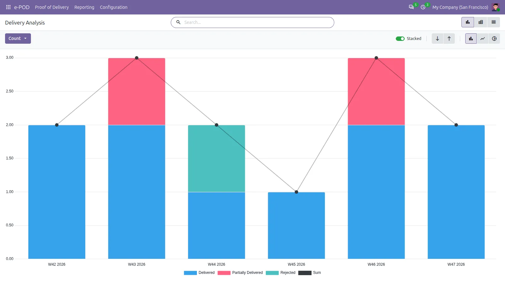
Settings
Photos, receiver name, signature and GPS requirements, geofence radius, backorder policy, enforcement and the Delivery Slip QR code.
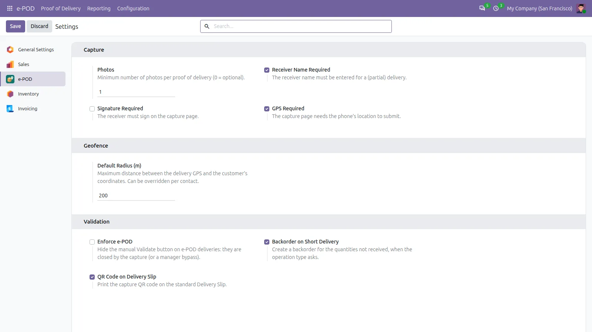
Set up in 2 minutes
- Install the module. Delivery operation types are e-POD enabled by default (e-POD → Configuration → Operation Types).
- e-POD → Configuration → Settings: choose the required proofs and the geofence radius.
- Geolocate your customers (Compute based on address on the contact) for the GPS check.
- Confirm a delivery, print the QR slip and give it to the driver.
Requirements: Odoo 20.0, depends on stock and base_geolocalize. The capture page
needs HTTPS for camera and location access on phones. Tracked products (lots/serials) must be
reserved before dispatch so the capture can validate them.
QR codes are drawn by reportlab and need its PNG backend: Odoo's Debian/Ubuntu packages include it, on a pip-based Linux install run pip install rl-renderPM (Odoo's requirements.txt lists it for Windows only), otherwise the QR code stays empty.
Get Proof of Delivery
Questions before buying? Write to tama.odoo@gmail.com.